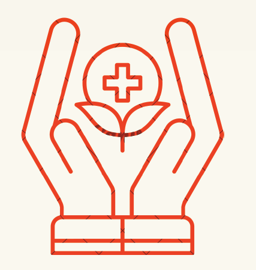

Why Health Synergy?

Holistic Approach: -
Personalized Care: -
Accessible Wellness: -
What Sets Our Website Apart in a Crowded Digital Landscape
Holistic Approach to Health:
Our platform integrates a comprehensive approach, offering not only telehealth services but also personalized recommendations for diet, exercise, and holistic wellness. These features collectively highlight the holistic approach.Personalization and Customization:
Our website provides highly personalized recommendations based on individual health profiles, preferences, and goals. Often users appreciate custom-made solutions that meet their unique needs.User-Friendly Interface:
We ensure to provide an intuitive and user-friendly interface. Easy navigation, clear instructions, and seamless user experience contribute to user satisfaction and can set our platform apart.Accessible and Inclusive:
We plan to establish this website and ensure accessibility to rural areas. Our platform addresses the needs of individuals in rural or underserved areas. It would also meet the needs of users with varying levels of technological literacy.Innovative Technology:
Our platform incorporates innovative technologies, such as advanced symptom analysis tools, AI-driven recommendations, or telehealth advancements, that enhance the user experience.Community and Support:
Building a strong community and robust support system sets it apart from another website. Our platform fosters a sense of community, where users can interact, share experiences, and support each other. Our website cultivates a profound sense of community and provides a robust platform for mutual support.Education and Empowerment:
Our platform educates users about their health conditions, preventive measures, and wellness practices. Empowering users with knowledge contribute to long-term engagement.Partnerships and Integration:
Integrations can enhance the overall healthcare experience. Hence, we plan to provide collaborations with various other health-apps, healthcare providers and organizations.Motivation Behind Developing this Website
- Improving Accessibility:
Our main motive is to acknowledge the importance of accessible healthcare, especially in remote or underserved areas. It aims to bridge the gap; geographical and physical barriers.
- Holistic Health Approach:
To embrace a holistic approach to health, our platform likely aims to address not only symptoms but also factors such as nutrition and exercise, recognizing the correlation of physical and mental well-being
- Technology for Positive Impact:
With rapid advance in technology, it becomes crucial to make some positive impact in and around. The potential of digital solutions is enhancing the healthcare experience, making it more convenient, personalized, and effective.
- Innovation in Healthcare:
A keenness to contribute to the innovation and evolution of healthcare services by introducing pioneering tactics, such as symptom analysis, personalized recommendation, guided exercise routines, and telehealth consultations.
- Response to Changing Needs:
Recognizing the changing landscape of healthcare needs, especially in the context of global events or health crises, we have developed this platform to address emerging challenges and adapt to the evolving needs of users. (PANDEMIC)